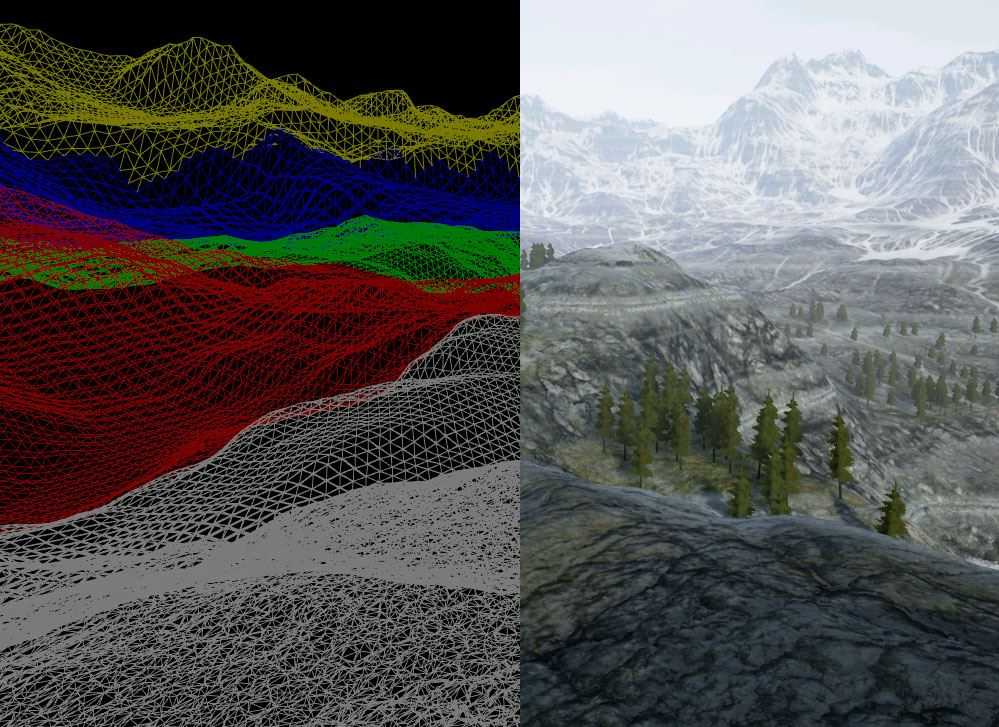
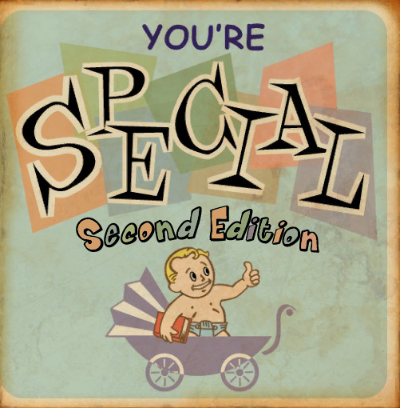
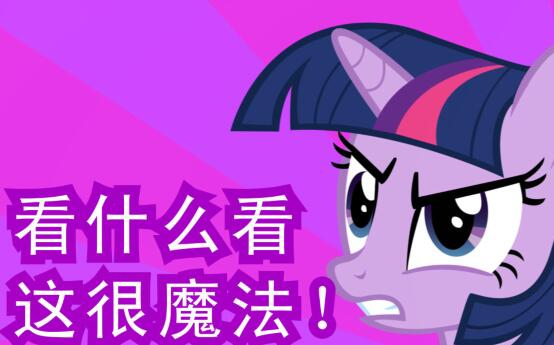
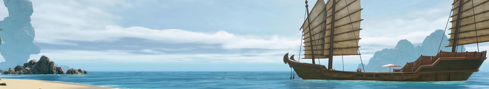
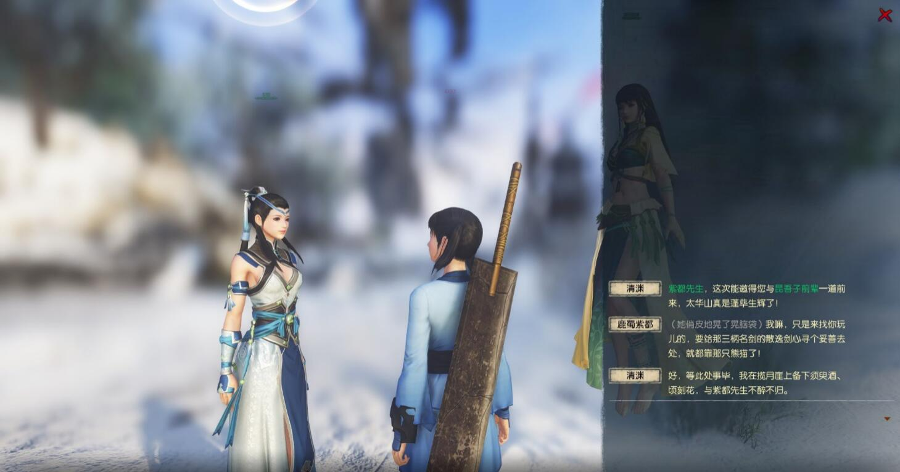
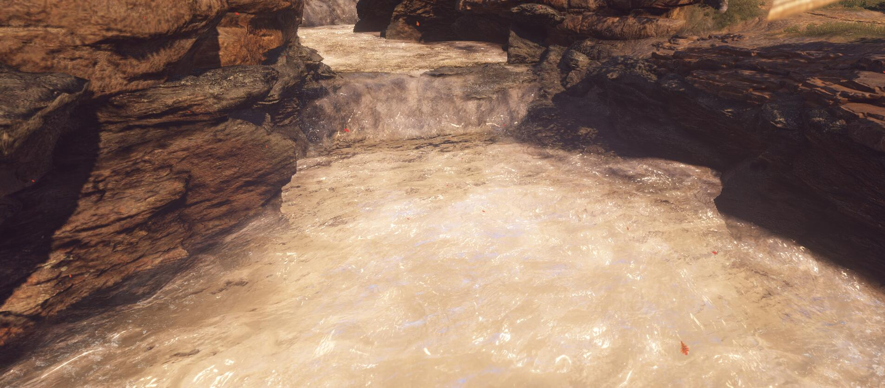
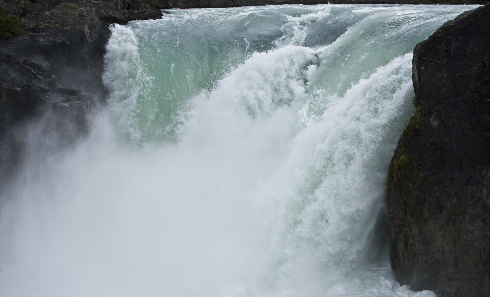

这是烛龙最好的时代，他们勤奋，他们向前，他们有曾经仰望着的研发实力，他们有曾经仰望着的研发资金。
而这也是烛龙最坏的时代，他们仓促，他们盲目，他们的策划缺乏思考，他们的程序性能低下。
尚能写出一份测评，应是我于古剑圈六年的惯性使然。换言之，我也早应该用脚投票了，像空闲的步云洲 1 线里，曾经活跃着的其他人一样。
按照以往的惯例，本次测评分为画面与表现力、操作与玩法两部分，由画面先开始说起。与其他测评有所不同的是，我的测评会包括以下内容。
- 极其大量的图片，请准备至少 100MB 的流量。
- 数个视频短片，就普通玩家而言并不太重要。
- 给宅龙员工看的，稍有些吐槽向的内容。
- 稍显啰嗦的，给玩家说明的科普知识讲解。
- 自我炫耀般的，对一些内容的探索过程。
- 仿佛是广告一般的，对一些新技术的吹捧。
- 自认为聪明的，对宅龙工作的肆意指点。
- 自说自话的，对未来发展方向的擅自指路。
而且，本测评虽然经过了排版，但篇幅极长，因此请量力而行，碰到实在啰嗦的地方可以跳过。
为方便宅龙人员阅读，重要内容将使用加粗，并尽可能使用列表、标题等方式说明……但说实话，这可能是你们见过我最认真的一次测评，一些地方虽然废话蛮多但是也夹杂了大量的图和视频，看全文有助于更好的理解嗯。
同时，本篇测评的版权相关说明如下：
- 本测评所使用的图片和视频有部分来自网络，因为来源复杂没有精力逐一申请和标明来源，望见谅。
- 如果本测评中所使用的素材有侵权行为，请作者在新浪微博上私信 @_wdhwg001 移除。
- 本测评采用知识共享署名-非商业性使用-相同方式共享 4.0 国际许可协议进行许可。

画面与表现力：你们对画质一无所知。
在本章中，原本决定只说画质，但经过思考之后，也会顺带着提及一些关于“表现力”的拓展内容。因为如果单独只谈画面，并讨论画面涉及的技术革新等内容的话，就现在来看，稍稍有些缺乏侧重点了。
那么，首先在本测里，充斥着以下关于画质的谩骂。
妈个鸡劳资无敌的 750ti 玩天刀全效不卡，到古网卡成翔，而且远景都是贴图，你他妈什么优化。
……很不幸，我只能说…你中意的天刀的总体复杂度与古网差距较大。
可能对这个差距，大部分人是缺乏概念的，所以在这里仔细说一下。
引擎与接口
一些古网吹可能已经说过无数次了，天涯明月刀是一个 DirectX 9.0c 接口的游戏，而古网是一个 DirectX 11 且不向下支持 DirectX 10 显卡的游戏，但是吹归吹，大家仍然不知道这意味着什么。
我试着举个稍微简单一些的例子。
曾经玩过古剑奇谭一代的玩家，可能被眉毛和发丝的问题困扰过许久——是的，就是那个半透明抗锯齿的开关。
当它没有打开的时候，眉毛和发丝是这样的：
当它打开的时候，眉毛和发丝是这样的：
…是的，由于 DirectX 9 的一些原因，使得一些像是抗锯齿一类的，极其基础的内容，实现起来都有些复杂和低效。
但是，你看天刀的头发就很好啊，你古网用了 DirectX 11 做的这么辣鸡有资格说？
有资格，比如我来截个图，这是古网开场剧情中的一处桥梁，它使用了较为复杂的折射半透明材质，这是 DirectX 9 的天刀较为难以实现的，像这样难以实现的还有许多。
你说难以实现就难以实现？666，有证据吗？

有啊。比如天刀拉近人物时的模糊，受 DirectX 9.0c 的限制，是直接的、整体的添加一层遮罩，然后做一些奇技淫巧的 Bloom 一类的。
而古网得益于 DirectX 11 提供的景深支持，加上使用了比较先进的 HDR，可以拥有比较精确的光圈控制。
简单的说，这种差别就像使用 Photoshop 的“高斯模糊”对背景模糊，和使用大光圈单反拍摄近景带来的景深模糊相对比一样。
另外，如果再细节和全面一些的话，DirectX 11 提供的Shader Model 5和 DirectX 9.0c 提供的Shader Model 3的功能对比如下：
| 像素着色器 | PS 3.0 | PS 4.0 | PS 5.0 |
|---|---|---|---|
| 指令槽数量 | ≥ 512 | ≥ 65536 | ≥ 65536 |
| 可执行指令数 | 65536 | 无限制 | 无限制 |
| 插值寄存器 | 10 | 32 | 32 |
| 指令预测 | 支持 | 不支持 | 不支持 |
| 变量寄存器 | 32 | 4096 | 4096 |
| 常量寄存器 | 224 | 16×4096 | 16×4096 |
| 动态流控制 | 24 | 支持 | 支持 |
| 位运算操作符 | 不支持 | 支持 | 支持 |
| 原生整数支持 | 不支持 | 支持 | 支持 |
| 顶点着色器 | VS 3.0 | VS 4.0 | VS 5.0 |
|---|---|---|---|
| 指令槽数量 | ≥ 512 | 4096 | 4096 |
| 变量寄存器 | 32 | 4096 | 4096 |
| 常量寄存器 | ≥ 256 | 16×4096 | 16×4096 |
| 动态流控制深度 | 24 | 支持 | 支持 |
| 贴图采样器数量 | 4 | 128 | 128 |
| 位运算操作符 | 不支持 | 支持 | 支持 |
| 原生整数支持 | 不支持 | 支持 | 支持 |
| 运算着色器 | VS 3.0 | VS 4.0 | VS 5.0 |
|---|---|---|---|
| 是否支持 | 不支持 | 不支持 | 支持 |
…如果你对上面的内容表示看不懂，而又学了一点点 C 或者 VB 一类的语言基础的话，用一句话概括就是这样：
在 DirectX 9 提供的显卡语言里，你没有整数相关的所有类型，没有位运算，只能使用 32 个变量，更没有内存、指针和数组。
所以，你管这叫编程语言？！这玩意能有灵活性？！
3D 模型复杂度
场景复杂度
毫不客气的说，古网的近景也难免有不少瑕疵，比如步云洲的各种胡乱拼凑和穿插：
再比如渭川塬湍急的大河旁边拉伸过度的材质：
…但是抛去这些，古网的场景复杂度在网游行列里当属前列。
抛去这些？
在逗我笑吗，把缺漏都抛掉了然后吹画质？
是的，在这里，我们需要比较认真的审视场景的平均精致程度，也就是说，要了解玩的过程中，有多少玩家可以抵达的地方有粗糙的内容。
天刀在这个问题上，选择了宁愿提供空荡荡的粗糙场景也要维持自由度的设计。
而古剑在这个问题上，选择了在保证精细度的情况下尽可能将场景本身精致的部分做大。
所以，古网的选择，意味着想要达到天刀的场景大小很可能是一条颇为痴人说梦的目标，而古网补完的程度有多高呢？

（感谢贴吧吧友 ynkian 的挖宝日记）
古网的场景还远远没有完成，目前完成的，比较完整的野外场景只有终南山麗一张地图，而终南山麗地图的平均精细度是相当惊人的。
人物材质
此外，让我们来对比一下材质，也就是大家常说的贴图，从人物服装材质开始，很抱歉因为韩服黑沙较难玩到，所以不加入对比。
这是天刀的人物服装材质。
这是天谕的人物服装材质。
这是怪物猎人 Online 的人物服装材质（已安装高清补丁）。
然后，这是古剑奇谭网络版的人物服装材质。
（感谢新浪微博 @银杏卷 供图，已征得同意）
差距大概是这样嗯。
场景材质
我们再来对比一下场景材质。
这是天刀开场环境中能找到的最精细的场景材质。
这是天谕开场环境中能找到的最精细的场景材质。
这是怪物猎人 Online（HD 补丁）开场环境中能找到的最精细的场景材质。
然后，这是古剑奇谭网络版开场环境中常见的场景材质。
所以，古网的整个 3D 的复杂度从客观而言，无论从场景，还是从人物，还是从使用的材质精度来看，都高出了其他网游许多。
选用的技术和画质亮点
同样的，在古剑奇谭网络版中，也实现或采用了许多先进的，颇具亮点的技术，在盘点这些技术的时候，我们或许可以感受到烛龙美术和图形团队在古网中花费的心思。
PBR
PBR 已经被吹过好多次了，事实上，古网也早已不是国内，或者网游界第一个使用 PBR 的游戏了，而且甚至…PBR 也不是 DirectX 11 的专利。
比如，怪物猎人 Online 作为一款 CE3 引擎的 DirectX 11 游戏就没有完全使用 PBR。
而天涯明月刀 Online 作为一款接口使用 DirectX 9.0c 的游戏却使用了 PBR……

但毫无疑问的，使用 PBR 对材质质感的提升是重大的。
我……其实我…
我看 MHO 的画质也不错啊？
嗯。这便是我想要说明的地方了——也就是解释一下，PBR 到底是什么。
大致有些编程基础的同学，在这里可以跳转至以下链接，那里说的更学术和全面一些：
https://zhuanlan.zhihu.com/p/21961722
想要说清楚 PBR 是个什么东西，我们首先要从无 PBR 开始说起。

游戏界和 CG 界有个相当大的不同，便是游戏界出于性能考虑，通常会使用近似的方法生成差不多的画质，以希望骗过玩家的眼睛，让玩家感觉到和真货差不多，又让显卡能吃得消。
而其中，为了实现更复杂的光照，通常会采用一个名为“延迟着色”（Deferred Shading）的技术，这个技术将“处理模型”和“处理光照”分开来，使得“计算应该显示的色彩”成为计算 3D 模型之后的一个步骤，所以叫延迟着色或者延迟渲染。这种方法可以避免计算玩家看不到的地方，也避免重复对一个屏幕上的像素点对应的场景位置计算多次光照……因为计算光照是比较慢的。
而因为它将模型和光照隔离开了，所以需要一个快递员负责将算好的模型数据发给光照计算器去计算渲染色彩，这个快递员我们称为“几何体缓冲区”（G-Buffer）。
但现实是残酷的，G-Buffer 同学的快递速度很快就成为了这个算法的瓶颈，因此，大家只能尽可能的让快递员少拿些东西，以便跑的快一点。经过对快递员的体能测试，发现当他每次拿 4 份黑白图的情况下，跑的速度比较快。
…然而，现实远比想象中的残酷一些。在传统渲染里，我们需要让他拿一份物体的漫反射颜色，即表面颜色贴图（Diffuse），包括 RGB 三原色三张黑白图，然后拿一张高光贴图（Specular），高光贴图中，以纯白表示最强的金属反光，以纯黑表示完全没有金属反光，所以也是一张黑白图。
但是，这样是不正确的。我们知道，金属的反光不能这样表示，因为比如金子的反光是金色的，而铁的反光是白色的——事实上，金属是没有漫反射颜色的，它的 Diffuse 颜色是 0——也就是说，在现实世界中，它的颜色应该完全的来自于它的高光颜色。
也就是说，只用黑白表示反光的强烈程度并不能准确的表示现实世界中物体的材质，而正确的高光贴图必须包括高光的颜色信息——也就是说，Specular 也需要 RGB 三原色三张黑白图才能正确的表示。
然后，我们立刻就会想到快递员的问题。因为，如果我们也送了完全的高光颜色的话，快递员就不得不拿着 6 张黑白图跑步了，比原先多拿了足足 50%，快递员肯定会跑的很慢很慢的。
所以，人们在对光照进行了仔细的分析之后，提出了几个新的方法，下面是其中之一。
$$
diffuse = albedo × (1 - metalness)
$$
$$
specular = 0.04 + metalness × (albedo - 0.04)
$$
这啥卧槽……
好高大上，看不懂！

事实上，如果你强行忍着吐去看这个公式的话，会发现里面有两个新的变量，Albedo 和 Metalness，而原有的 Diffuse 和 Specular 则通过这两个变量被重新定义了。
其中，Albedo 是原先的 Diffuse 的替代物，它…尽管翻译为“反照率颜色”，但如果你仔细推敲的话会发现，它和“漫反射颜色”并没有什么特别的差异…
事实上，也正是这样。“金属性贴图”（Metalness）也和“高光贴图”差不多，也只是换了个说法但是…这两项无论有哪个变动，都会同时影响 Diffuse 和 Specular 两者。
更简洁一些的说的话，Albedo 只记录“物体原有的色彩”，而 Metalness 则用于控制“这个 Albedo 色彩中高光的所占的百分比”。
因此，我们就能够通过让快递员传递 Albedo 色彩+Metalness 百分比，使得渲染的时候可以正确的表达土壤、塑料和金属等各种材质了，这也就是 PBR 流程带来的优势。

老师我知道了！
那，怎么表达一个墨绿色亮点车漆，或者一块玉石呢？它的反光和它的底色并不一致…
或者，像一些物体你从不同的角度看上去它的反光颜色会变，比如防伪贴纸…

答案是无法解决。是的，PBR 并不是只可以划分成 Albedo 和 Metalness，而对真实的物理材质的模拟方法，也不止有 PBR 一种处理方式。比如上述的第一种就是一种折射材质，需要次表面渲染（SSS）；而第二种是一种各向异性材质，不同的各向异性材质的近似模型也各不一样。对于这些特殊的材质，通常需要改变渲染模型或者使用一些特殊的奇技淫巧达到效果。但是，看到这里你已经出师了，而我在未能确定宅龙是否使用了材质蓝图的情况下也不能擅自科普…所以 PBR 就讲到这里。
不过…

如果有宅龙人员不厌其烦的看了这一篇的话，听我一个建议，如果可能的话，买个 Substance 吧，对 PBR 材质的快速制作是有相当大的帮助的，也是一个快要成为新的行业标配的软件了，而且也是《九阴真经 OL2》和大量的 3A 游戏中采用的材质制作工具。
HBAO+
这项技术在 2.5 测的测评和其他发布的内容中曾经提到过许多次了，这是一个包含在 NVIDIA GameWorks 套件内的技术，也是整个 GameWorks 套件中性能影响最低的一项技术。同时，它也是目前最为完善的环境光遮蔽的解决方案。
值得一提的是，这项古网采用的技术，在网游界仅有四例，分别为魔兽世界 6.1、全境封锁、怪物猎人 Online 主题测试（非本体），以及古剑奇谭网络版。
为了更好的对比 AO 的效果，在这里我统一使用全境封锁截图作为对比。
无 AO，即天涯明月刀等游戏的选择：

SSAO，即大部分网游和古剑奇谭 2 的选择：
HBAO+的效果：
绿坝！是我眼睛不好用吗，我觉得 SSAO 也不错啊！
既然有还不错的 SSAO，那为什么弄 HBAO+，还那么卡…
是的，乍看下去，尤其是使用静态截图的时候，SSAO 的确可以提供“能接受”的结果，但对于复杂的场景，SSAO 的加入不仅不会提升场景的立体感，还会欺骗双眼，制造所谓的“页游即视感”，而古网 2 测饱受批评的页游感便是来自于此。
如果再对比一下的话，可以看这张 GIF。
相信一些眼尖的人已经可以看出问题了。没错，SSAO 作为“屏幕空间环境光遮蔽”，只是简单的根据屏幕上显示的画面判断明暗，而不会计算物体实际的漫反射数据…呃，为了解释这个概念，我们来看一个静物素描过程，先从线条轮廓开始…
然后，把阴影明暗加上…
是的，这就是我们人脑可以正常接受并理解的，看起来没什么太多问题的渲染效果了。
注意图片上的梨和火龙果，它们贴近桌面的时候会因为“漫反射到的光”减少而变暗，而这也就是需要“环境光遮蔽”的地方，因为现在的显卡无法对每一条光线进行实时追踪，所以无法用现实世界中“叠阴影”的方法将这些变暗的地方表现出来，所以除了常见的阴影以外，还需要额外的环境光遮蔽作为补全。
而 SSAO 作为一个极其简单的小算法，它只计算屏幕上每个物体的深度，也就是说，它会把你现在屏幕上的东西，转变为一个“近暗远亮”或是“近亮远暗”的图片，“近远”指的是物体距离摄像机镜头的距离，这张图片像是这样。
然后，这个算法会尝试检查这张图片上“变化得像是一个角”的地方，并给这些地方添加阴影……这样显然是不正确的，但如果从一些静物图上来看，这样的处理或许问题也不大…
但是，在电脑上画画的时候，颜色的范围只有 0~255，而 SSAO 处理的深度图虽然颜色更多一些，但仍然完全不足以表现这个世界上的所有深浅，而更大的数据又会直接的、数倍的影响 SSAO 的运行效率，而且再加上 SSAO 的阴影总是沿着边缘平均的添加…所以就会发生这里的问题。
是的，冰石“向上”的一小部分也被错误的增加了阴影，因为对于 SSAO 来说，它们看起来都像是一个角。
同样的，视野拉远的时候，人物的四周也会被描上一层黑光，因为对于 SSAO 来说，人物边缘和地面的射线距离也不够大，也仍然可以算作是一个角，尤其是人物通常是圆筒形的，本身在靠近边缘的时候深度就会快速变化…呃也就是说，在 SSAO 的眼里，人的周围需要补齐阴影是因为人长得像是…这样：
…而对于一个封闭着的盒子，在 SSAO 的眼里又变成了这样：
是的，在上述两种情况里，SSAO 的计算结果都是完全错误的，而这种算法本身过于稚拙带来的错误，则会极大的影响场景的立体感。所以，要解决这个问题，现在比较成熟的算法便是使用 HBAO+。
与 SSAO 不同的是，HBAO+并不查找边缘，而是每像素点对深度进行一个模型的水平搜索，以大致的测量出这个深度下，一个均匀的环境光在这个像素点上会被均摊在多大的空间内…差不多是接近这样的实现。
在这样的算法下，人的周围无需补齐，而盒子里也可以被正确的添加阴影：
而在这里，HBAO+的每条追踪可以相对独立的完成，同时这种结果既不需要展示在贴图上（贴图是生成阴影之后存在的），也不需要对顶点进行操作，所以使用先前提到的，DirectX 11 支持的“运算着色器”，即使用显卡直接的、异步的完成这项工作可以大大的提升效率，使得 HBAO+的算法在相当程度上可以做到性能与 SSAO 接近。
| 环境光遮蔽算法 | 分辨率 | 采样数(每像素) | 显卡用时(毫秒/帧 越低越快) |
|---|---|---|---|
| SSAO | 50% 半分辨率 | 16 | 1.3 |
| SSAO+ | 100% 全分辨率 | 16 | 4.6 |
| HBAO | 100% 全分辨率 | 4 | 1 |
| HBAO+ | 100% 全分辨率 | 36 | 2.4 |
而烛龙使用 HBAO+，便是以微小的代价换得了立体感的全面提升。
……不过值得一提的是，HBAO 是在 SIGGRAPH 2008 上提出的，NVIDIA 一边改进算法，一边奋力造显卡，等了摩尔定律大概五年才在 2013 年前后正式推出，也是蛮辛苦的。
水体
想要仔细的讨论古网的水体，大概要从三个部分分别说起了。
浅水
这是古网最引以为豪的部分，得益于自主研发的水波效果，古网在未支持 Tessellation 的情况下，以视差的形式实现了相当逼真的水波效果。
在游动和跳入水中时产生的水波会无限的在相当大幅度的水域中扩散，和其他的水波交错、混合，同时碰撞到边缘并回弹，这一系列的拟真效果，在网游界是首创的，而在单机界，也只有《神秘海域 4：盗贼末路》等游戏有实现相近效果，并且也只有看门狗等游戏有实现更好的效果。
简单的概括的话，古网拥有次时代的，3A 单机大作级别的浅水波纹效果。
海水
这是古网第一次尝试描绘海面效果。老实说，虽然还有不完善的地方，但是在网游界，古网仍然提供了顶尖的画质表现。
在深海区，有视差的波浪。
在沙滩上，有被海水润湿的深色的沙子。
在浅海区，有较高的透明度和太阳折射在水底的纹路。
在海滩和礁石旁，有白色的泡沫贴图。
在拱形的礁石上，有太阳反射浪花的纹路。
在沙滩上，有一些小贝壳。
以及，也有平静的海浪一下下吞吐的效果。
以上，海水的画质与浅水不同，是一项需要手动完成大量细节的工程。古网在海水的模拟上并不太过突出，但在网游界仍然可圈可点。
流体
老实说，古网的流体做的并不怎么样，但是，却也刚好与海水一样，位于一个在网游中领先，在单机中较为落后的位置。
嗯，目前古网只实现了半透明的，带有折射效果的水流。
GPU 粒子
说实话，这是我感觉相当意外的一件事，因为前期游戏服务器质量和 BUG 原因，我并没有太过耐心的看剧情的 CG，而当我静下心来，认真看剧情 CG 的时候，却看到了这样一幕。
…带有场效果的粒子？我起初是不太相信的，因为既然古网使用了这样的技术，它理应得到更多的体现，比如体现在角色技能，或是其他电光火石的瞬间一类的。
然后，我看到了这样的一幕，虽然在许多玩家眼里，这样的小细节只是稍稍有些炫…
但是，这是货真价实的 GPU 场粒子，它曾经作为一项虚幻 4 的重要宣传内容被大肆吹捧：
对的，如果你仔细观察这种我说的“不同于普通粒子”的粒子的话，你大概会得出一个结论。
它们像…
像…海里的鱼一样会聚成形状？
正确。准确的说，这种粒子并不像传统粒子一样，只是沿着一个特定的方向迸发出去或是做些随意的事情，而是它们由一个在 Maya 里定义的力场控制，跟随着这个力场上每一个空间坐标拥有的向量而移动、聚拢、散开等等。而昊苍的这个粒子球使用的场，无疑是一个球形的力场。
想要解释“力场”的概念，我们需要把它放到 2D 上，想象一个学生时代的运动场。
当孩子们在运动场上奔跑的时候，老师们希望他们逆时针的沿操场跑，所以，如果把每个位置都画上老师希望跑的方向的话，大概是这样：
然后就形成了一个场，在场中，孩子们扮演的粒子在每个位置都拥有一个确定的方向，当昊苍搓球的时候，每个粒子“孩子”也便像是这样的，沿着场内的方向运动。
但是，如果孩子们不听话，也就是孩子们听从的几率比较低的话，孩子们会在跑的过程中向外甩的到处都是。魅迦消失的时候，便是使用的这种控制方法，通过一个并不闭合的场和较低的“听话程度”使得产生一种逸散的效果。
值得一提的是，因为每个粒子“孩子”的运动是独立的，每个粒子“孩子”接受的命令是相对简单的，所以这并不是一个适合 CPU 这种只有几个高性能核心的处理方案。反之，对于拥有数千个简单核心的显卡而言，模拟这样的粒子运动是极其高效的，事实上，在一个适度优化的显卡环境中，GPU 粒子的总数量可以达到传统 CPU 粒子的十倍以上，带来极其夸张和华丽的特效。
而这项技术，使得我带着极大的好奇心，决定解包古网的资源一探究竟。
…事实上，想要找到这些粒子效果，在一个无法调试的游戏里无异于大海捞针…但仔细寻找之后，在庞大的资源里，一处角落引起了我的注意。

…就是这些文件，它们被放在 vfx/particles，而不是 particles/gfx 里，而它们是可以打开的。不仅如此，让我们看一下它前一些部分的内容。
…Version = 1.9.4.30080;是什么？在宅龙的历史里，似乎很难找到它对应的版本号，而已公开的 YEBIS、SpeedTree 也没有类似的数字…而CParticleEffect和文件夹的popcorn又是什么，和.pkfx的 p 有关吗…？
…经过仔细查找，一个有些名不见经传的粒子特效工具浮出了水面，它就是 PopcornFX。
而上海烛龙的 Logo 赫然出现在了它的厂商中。
让我们看一下它的宣传…
事实上，它作为一个功能相当齐全的特效工具有些过于低调了，甚至连宣传片里都没有提到它可以做到的一些夸张的东西，所以…让我们再看一下它的 Unity 插件和 Unreal Engine 4 插件的宣传…
…是的。尽管这家公司的宣传有些过于朴实，但我们仍然可以看到它在特效领域提供的绝佳的拓展空间。其拥有的诸如轨迹粒子、Mesh 动画粒子、碰撞检测、模型追踪，以及完善的脚本支持、极好的执行性能和自带的优化测试工具也让它变成了非常划算的，强大而完善的粒子解决方案。
而古网…如果不是我见识浅薄的话，同样是国内首个使用 PopcornFX 的公司，而 PopcornFX 本身是不支持已停止研发多年的 Havok Vision 引擎的，相关移植基本由宅龙独立完成，在这一方面体现了相当超前的视野和研发实力，Havok Vision 这引擎怕是要被宅龙玩出花了。
顺便，PopcornFX 已经更新了 1.10.x 版本，带来了大量的脚本性能改进，在支持 AVX 指令集的 CPU 上（Sandy Bridge，2011 年以后）可以获得 1.3x 至 2x 的脚本平均性能提升，浮点性能提升 5 倍以上，整数性能提升 7.5 倍以上，音频采样器性能提升 13 倍以上，都是极其惊人的性能提升，值得跟进更新。
另外，PopcornFX 的 1.10.x 版本也正式支持了一些距离、位置相关的函数，方便对粒子进行 LOD 优化，具体更新内容详见： http://wiki.popcornfx.com/index.php/PK-Editor_v1.10
最后，如果确认 PopcornFX 比 Vision 中目前使用的 gfx 拥有更强的性能的话，希望将几乎全部的 GFX 特效进行 PopcornFX 重置，也让玩家技能、天气、环境粒子、火焰等等内容得到更多的性能改善和效果增强。
（其实，PopcornFX 在 1.9.0 刚刚支持了 GPU 粒子加速，需要 D3D11 和手动在中间件接口中触发，所以如果宅龙并没有如我预计的那样，在接口中实现默认 GPU 粒子加速的话，可是要加紧了……不过应该实现了吧？应该吧？）
实时材质和光影
说实话，这是另一件比较令我惊讶的地方。在开场的剧情里，我们需要摸一个柱子…啊不对，是“将剑意一口气注入明心见性灯”…也就是这个不起眼的，不标注我还以为是场景上固定着的一部分的小灯…
好，读完条应该是切地图吧？或者把玩家传送到地图的另一块坐标，毕竟面前没路了嘛…
嗯，当时的我是这样想的，然而。
……
？！
……
…卧槽。
…说实话，这是我在古网剧情中见到的，最震撼的一幕了。如果要说这种技术还在哪里应用过的话…
没错，是刺客信条系列嗯。事实上，这样的技术涉及到较为突兀的模型、光照数据的加载，所以为了平滑效果，大多会采用将场景变色、加入特效等的处理方法，而也恰恰是这种处理方法让这种动态场景加载技术可以被快速的识别出来。
而在之后，又有一项技术让我感到有些惊讶了，便是这个地方。
在实际游戏中，这里的材质会随着玩家向前走逐一的亮起，配合着相当逼真的细小的火焰，制造出了梦幻般的效果。
同样的，如果不是我见识浅薄的话，这些在网游界也应该都是首创的。
云海
起初，古网的云海质量并不令我感到太过惊讶。但是，在勉强阅读了编译过后的 CloudShading.Shaderbin/DirectX 11.vShaderBin 之后，我却是有些钦佩宅龙的程序了。
啥？
为毛，效果不是一般吗？
…事实上，钦佩的原因是我注意到了下面的一些乱码。

…Perlin-Worley Noise，是 SIGGRAPH 2015，也就是图形学最权威的年会上，“实时渲染在 3D 图形和游戏领域的进展”一节中，由《杀戮地带》的开发商 Guerrilla Games 所提出的，被用于其新作《地平线：黎明时分》的实时体积云景技术的核心部分。
稍稍用人话说的话，宅龙对图形技术的追求，已经使得宅龙用上了真正的图形学前沿领域的一些成果。

虽然宅龙的实现还有些问题，比如进行了相当程度的劣化和缩减，这一点还会在接下来的问题部分提到但是…
事实上…古网很可能是整个游戏业界中，第二个使用了这项技术的游戏……嗯，整个游戏业界，包括主机游戏、PC 单机在内的第二个。
甚至，如果考虑到《地平线：黎明时分》尚未发售，而古网已经让玩家玩到了的话，古网应是业界首例。
除此之外，还有官方曾经大力宣传过的 HDR Tone Mapping 在一些暗的场景中也有着相当不错的效果，经过 Tone Mapping 之后，场景可以以极低的色彩损失代价表现了很好的 HDR 效果，同时还可以自由的转换色温、色调和对比度，从而制造出相当逼真的各类环境，渭川塬的荒人区、河流区和清凉道区就是很好的例证。
不过，值得一提的是，古网所用的 YEBIS 提供的 Tone Mapping 算法看起来比较像 Filmic Tone Mapping，而它并非是最优秀的，虽然可以整合其他图像矫正，但单纯讨论 Tone Mapping 的话，有运算量低不少，而结果却鲜活的多，且不丢失细节的 ACES Tone Mapping 算法，不需要两个多项式相除，从而可以改进一些性能，现已被 Unreal Engine 4 和古墓丽影：崛起采用。
相关链接的话…
中文：https://zhuanlan.zhihu.com/p/21983679
英文：https://knarkowicz.wordpress.com/2016/01/06/aces-filmic-tone-mapping-curve/
对比图，这是流行的 Filmic Tone Mapping：
这是 ACES Tone Mapping：
可以尝试评估一下两种 Tone Mapping 对整体画质调整的影响和性能，然后考虑是否更换 Tone Mapping 算法嗯。
问题、建议和尚未完成的坑
是的，尽管有许多可以吹捧的地方，古网在画面上仍然有比较长的路要走。我并非专业的图形工程师，所以，仅仅根据我了解到的信息，对画面提出一些意见、建议和 Bug 反馈。
PCSS(或光线追踪的距离场软阴影)
这是一项从 2.5 测便开始建议的特性，而现在再次提出，很大的一点是——Ray Traced Distance Field Shadow（光线追踪的距离场软阴影）作为 PCSS 的一个近似替代，比传统的 CSM 阴影更快、质量更好，而且有 Unreal Engine 4 的源代码范例可供移植。
来看一组 Unreal Engine 4 官方文档中的数据。以下 GPU 所用时间计算是在一张 AMD Radeon 7870 显卡下，以 1920×1080 分辨率运行一个完整游戏场景得出的。
10000 距离的平行光源，3 层级联（Cascades）
Cascaded Shadow Maps（传统方案） —— 3.1ms
Ray Traced Distance Field Shadow —— 2.3ms（提速 25%）30000 距离的平行光源，6 层级联（Cascades）
Cascaded Shadow Maps（传统方案） —— 4.9ms
Ray Traced Distance Field Shadow —— 2.8ms（提速 43%）单个大型的点光源
Cubemap Shadow Map（传统方案） —— 1.8ms
Ray Traced Distance Field Shadow —— 1.3ms（提速 30%）五个小型的点光源
Cubemap Shadow Map（传统方案） —— 3.2ms
Ray Traced Distance Field Shadow —— 1.8ms（提速 45%）
通过测试结果我们可以看出，RTDFS 对阴影性能的提升，随着阴影状况的复杂而逐步增加，在四项测试中最低的性能改进也高达 25%。
而 RTDFS 作为一项 PCSS 的替代品，其同样也实现了传统 CSM 阴影无法实现的“根据距离逐渐模糊”的特性，作为示例的话，以下是单个点光源使用 RTDFS 的效果：
以下是平行光源使用 RTDFS 的效果：
以下是 Unreal Engine 4 的 Kite Demo 中，使用传统 CSM 的效果：
以下是 Unreal Engine 4 的 Kite Demo 中，额外使用 RTDFS 的效果：
经过对比，我们可以看到显著的画质提升。同时，考虑到2016 年 6 月 3 日的新闻中已宣传过“NVIDIA 阴影技术的应用”，而游戏中并未采用 PCSS 或任何其他的非 CSM 阴影方案，这个承诺过的坑可是要填的哦。

所以，如果对 Unreal Engine 4 的软阴影实现感兴趣的话，可以前往这里（Unreal Engine 4 官方文档）查看具体的信息，前往这里（Unreal Engine 4 源码）查看具体的实现参考。
LOD 与性能改进
这是一个颇为艰难的话题。尽管先前曾经对古网所使用的各项技术和亮点进行了相当多的吹捧，但有一件事却是不得不提出的：
古剑奇谭网络版的执行性能，呃…
仅达到画质相近的单机游戏的 70% 甚至更低。
以 Unreal Engine 4 的 Kite Demo 为例，在 Kite Demo 中，植被的模型精度是惊人的，一块石头、一丛草的 LOD0（即游戏中能看到的最精细模型）能够达到数千面，而最高的 LOD 也依然有数百面，一棵树的 LOD0 面数更是达到了数万面，草的密度更是铺到了看不到地面的程度，这样极其复杂的场景在 Unreal Engine 4 中，仍然能使用 GTX980 以 30fps 较好的在 1080P 下运行。
同样的，在不开启 HairWorks、除树叶可见度为高以外其他最高的情况下，巫师 3 的植被密度同样十分惊人，观感的植被密度达到了古网的两倍左右，地面虽未使用镶嵌，但有大量的古网未使用的小石块等独立模型，却可以使用公版的 GTX970 以 60fps 的帧率在 1080P 下运行。
是的，引擎本身在同画质下的执行效率不高，这便是古网被玩家抱怨的“这么卡不如玩单机”的较为底层的面貌了。尽管古网的画质在网游中属于上乘，但其较低的执行效率使得古网在玩家眼中“配不上这么高的配置要求”，因此，便会产生抱怨。
有些抱歉的是，在这次测试中，我忘记了使用 GPU Profiling 工具测试古网的各项参数，但经过实际体验和查看解包文件，我可以基本确信的一点是，古网的 LOD 相关优化远未达到一个开放世界所要求的标准。
…呃，如果你不知道 LOD 是什么的话，LOD 是 Levels of Detail 的简称，是一项…通常来说，简化玩家看不到的、很难注意到的远景模型，从而灵活的控制场景精细度，使得制作更恢弘、更复杂的场景成为可能的一项技术，这项技术在数年前就成为了各类游戏标配……再简单一些的说的话，比如一个模型凑近要 5w 面才能看清细节，而距离远了，只需要 1k 面就能达到一样的效果，再远远的话，可能 10 面就够了…LOD 就是这样的技术嗯。
- 改进树木的 LOD 分层
让我们来看一张巫师 3 的截图。
从这张图上我们可以看出…咳，巫师 3 的树木和灌木 LOD 大概有四层，最精细的实际模型 LOD0、使用公告板的 LOD1、高精度单片树 LOD2、低精度单片树 LOD3。要想解释巫师 3 的树木，我需要给第一次看我测评的人再讲一下公告板是什么。
公告板（Billboard）是一项让贴图始终面向镜头的技术，被 2010 年前后的游戏广泛应用于制作树木等植被。因为开发商只需要对每一支/每一丛树叶制作一个公告板就可以了，不需要实际将叶片做出来，可以最大限度的节约树木的面数。但是，若玩家直视树木且角度变化较快时，公告板会因持续的面向摄影机产生面片原地旋转和强烈的，被叶片围观的瞩目感，就像这样。
好的，科普完了，让我们继续看巫师 3 的 LOD 设计。
LOD0 由 70% 的实际模型和 30% 的公告板构成。与常见的设计不同的是，巫师 3 的每一丛灌木、每一棵树木的 LOD0 都包含了穿插在内部的公告板……仔细看这两丛灌木的话，会发现一些面向摄影机的面片，它们就是公告板。
在玩家抵达 LOD1 的切换距离的时候，树干的 LOD 直接转换。
而树叶的变化则稍复杂一些，叶片的摆动会逐渐停止，随着距离变化，实际模型的比例越来越小，而公告板则逐渐淡入、替代原有的实际模型，这样的变动带来了十分自然的感觉，实际游戏中既不容易察觉到切换，也很难区分 LOD0 和 LOD1 的树木和灌木。
当玩家抵达 LOD2 的时候，巫师 3 会选择当树木摆动至原点的时候将其替换为单片树木并继续摆动，替换的淡入淡出过程是随着玩家的移动而进行的，淡入淡出所需的距离比较短，有些像是 SuperHot 的“我不动，敌不动”的样子，并且树木在完全替换之前都不会再摆动，这样的变动方式带来了非常好的效果，除去个别树木以外，大部分树木都可以像上一次转换一样无缝变动……这里我选了最差的一个，为了让大家看的清楚一些。
如果玩家的距离继续拉远，巫师 3 的一部分树木则会从会摆动的 LOD2 切换至近乎纯色的、不会摆动的、超远距离使用的 LOD3。在玩家抵达阈值前，树木的摆动幅度会逐渐减小，而抵达阈值后的切换过程与上一层类似，是同样的根据距离的淡入淡出，因为从 LOD2 到 LOD3，树木的轮廓几乎没有变化，所以这次替换仍然十分难以被察觉。此时的树木由于只是一两张存在轮廓的纯色面片，性能消耗极低，可被用于展示大规模的恢弘场景。
而对比古网，古网使用的 LOD 则相对简单，根据 setting.xml 判断，古网使用了仅仅两层的树木 LOD，从截图上也可以大致的看到，第二层只在相当远的距离才会启用，并且第二层要么极其简陋的低模树木搭配近乎纯色的模糊贴图…
要么则是变成了近乎纸片的效果，加上粗糙且带有一些“印花拼贴”感的贴图…
两种处理方式均使得远景质量较为低下，而近景由于完全没有 LOD，也得不到任何优化。
而更为糟糕的是，这种简陋的 LOD 区分直接影响到了古网预计的场景规模，使得场景设计时无法展现更大规模的远景，从而滚雪球一般的影响到了更多内容，比如光秃秃只有几棵树的太华山。所以，为了更进一步的优化游戏，提供制作更大场景的可能，对每个树模进行精细的 LOD 分层是十分有必要的。
远景的改进
其实…这是个比较难办的事情。在场景设计的时候，我们会希望即使是静态物体也要越少越好，最好能变成场景的一部分，以满足复杂城市的需求。而当 LOD 进行的时候，我们又希望场景和静态物体可以分别变化，以满足这种“大平原上有几个小房子”的状况下的 LOD 需求。
（右侧截图来自新浪微博 @Beancat ）
所以，为了处理这种问题，我们来看一下《Grand Theft Auto V》的处理方式。以下内容部分选自GTA V - Graphics Study
这张图中，包括了多种优化方式：传统的多层 LOD、地貌层 LOD 和场景替换，传统的多层 LOD 刚刚已经说过了，现在着重说一下《Grand Theft Auto V》完成的后两项内容。首先便是地貌层 LOD，这其实在先前的巫师 3 中也有体现。
这是一项在常见的，单机游戏中应用较为广泛的技术，因为地貌层通常由均匀的网格构成，对于较大的地图而言，这些网格在远处过于密集的存在会成为较大的一项性能拖累，因此比较流行的方法是将它们按距离进行逐级合并简化，使得在游戏的实际画面中，地貌网格面的密度较为均匀。

需要注意的是，上图来自 Unreal Engine 4，是另一项新技术的演示，即只在地貌的 LOD0 层应用镶嵌，使近景地表更加精致的技术。
而对于更远的场景，《Grand Theft Auto V》则采用了动态场景替换的方式，预先按区块制作了整个场景的低多边形版本，如此大的区域仅由两千多面构成：
随后，将远景的实际模型卸下，换上完整的低多边形版本并将实例化的植被原封不动的铺回去，然后按需在上面增添单面片的夜晚的车灯或白天的车身。
通过这样的“整体 LOD”，《Grand Theft Auto V》成功的提升了更多的性能，也使得一些诸如“开飞机看风景”等的需求变成了可能。
而至于古网，目前则只实现了简单的、固定的低模远景和简单的植被 LOD，场景内大小物体和地貌层 LOD 均未能在古网中找到强烈痕迹（未详尽测试），甚至于构成场景主体的岩石块等部件在极远视角仍未有足够的 LOD（此时所有植被已降至最低 LOD）。
细节可见性
…说实在的，这是相当大的一处黑点。看这张图：
没…
没什么问题啊？
嗯，从优化角度来说，这张图的问题是远处的石块…
…为什么还存在着。
诚然，在地面上添加碎块和小部件可以较好的改善地面光秃秃的问题，也可以不让玩家看到太多的生硬接面但是…
通常来说，这些小碎块、小垃圾、小石块是被用于增加近景的细节的，是用于弥补近景贴图过于平坦的问题的，而当处理远景的时候，小碎块由于其本身的个体较小，地表贴图质量下降较快，所以如果继续保留则会出现“精细度不均匀”的问题，而且…从性能上来说，小碎块在远景依然不消失是一项较为重大的缺漏，小碎块作为场景中近乎纯粹装饰作用的物体，LOD 应该遵循三分之一或者四分之一的削减度，并在稍远的距离就应将其完全淡出。
举个例子的话，比如战地 4 的小碎块。
MMO 的特殊需求
可能在提出植被 LOD 的时候，有些小伙伴已经忍不住想要喷了。
妈蛋，你在逗我吗！
巫师 3 什么视野，古网什么视野，你说古网植被密度低？
…是的，这里便涉及到了单机游戏和常见 MMO 的一些重要区别。

- 需要 60fps，或者至少 45fps 才能流畅应对各类操作考验。
- 玩家倾向于使用较远的视野，使得视野内物体数量达到单机的两倍以上。
- 同屏人数很少低于 5 人，人山人海更是常态。
- 在近景截图的时候，玩家会尤其挑剔模糊的材质。
- 在远景截图的时候，玩家又会尤其期待宏伟壮观又茂密的远景。
因此，为满足 MMO 的特殊需求，LOD 的面数也应做出一些调整，将“近景”与“正常游戏”的 LOD 分开，在近景使用更高面数的模型、更高清的植被，将“正常游戏”的 LOD 面数和材质精细度降至近景的三分之一。
反正我们最低要 8G 内存呢，内存条也是最廉价的升级了。
……32 位系统？丢掉就可以了真的。
你看《Grand Theft Auto V》被无数人说是神优化，而《Grand Theft Auto V》对 4GB 的挑剔也没成为软肋嘛。
更大的内存换更多的 LOD，怎么想都是划算的买卖啊。
同时，也需要将过近（如镜头前看叶片）的、角度奇异（如俯视看草）的贴图/模型隐藏，从而使得近景难以被玩家挑剔，而正常游戏时，也可以获得满意的画质。
而对于远景和超远景，使用单片的、布满山头的、通过扭曲贴图摆动的树木是一个较为经济的方案。比如上图中巫师 3 的远景便是由大量的单片树和云雾构成的，在公版 GTX970 下也达到了满帧，是一个非常棒的优化策略。
啊对了，记得在启动游戏时，声明游戏不支持 Aero 特效，使得 Windows 7 的 Aero 特效可以被临时禁用以提升性能。
更低的低配支持
任何优化，均不应该显著降低优化前所能达到的画质水准。
缩水是要挨骂的，而且古网未来竞争对手们的画质只会更高。
不过，在讨论过古网面临的“无损”或“微损”顶配优化之后，接下来便是古网的低配优化了。
是的，一些游戏的的确确会为了几级低配重写逐级简化的 Shader，重做场景模型，但这样的优化费时费力，尽管最终的效果可能较为出众，但却并不是主流的目标，也不适合烛龙太过采纳。
而且…如果 LOD 和 Shader 的模块化划分较好的话，优化并非一项需要成倍增加工作量的事情。
因此，我建议，对低配的工作应该采用“基准电脑”+极限低配的双重策略，在基准电脑的画质尽量…或者勉强能看的情况下，对极限低配采用所能使用的最低画质。
而根据近年来笔记本的销售情况来看，对应的基准电脑应为：
笔记本：
CPU：i5 4200M 2.5GHz
内存：8GB DDR3 1333MHz
显卡：GTX 860M 2G换算至台式机：
CPU：i5 6600K 关闭 2 核心并运行在 2.5GHz
内存：8GB DDR4 降至 1333MHz
显卡：GTX 750Ti 2G Boost Clock 低于 1100MHz，使用软件额外降频至 965MHz 以下硬盘：5400 转 硬盘空间足量
分辨率：1600 × 900
渲染分辨率：1280 × 720 Bicubic 或其他同质量插值
操作系统：Windows 7 SP1 64bit
目标帧率：平均 43FPS，最低 27FPS
这样的配置是一台普通的，可能经过小幅升级（加了内存条）的，于 2014 年中期购买的 6000 元级的平民游戏笔记本，这样的配置从时间和覆盖面上考虑较为合理，从 LOD 的资源管理方面考虑的话，8GB 的内存也较为充足。
因此，建议购置这样一台电脑进行实际研究。
而极限低配下，推荐将画质一路降低至可能的最低值，即所谓的安全模式，大概包括以下设定（如果它们可以带来显著的性能改善的话）。
阴影关闭。
全部贴图只使用 Albedo 或简单混合后的 Diffuse，即禁用 PBR 的粗糙、高光等贴图。
所有玩家同模成一样的男女模型，与自身所穿衣服相同。
所有特效关闭折射和粒子。
材质的贴图使用 512 或更低。
所有 LOD 默认从 LOD2 开始。
不显示草和地表细节。
调低视野至原有的 70% 或更低。
关闭 HDR，甚至关闭大部分 YEBIS 功能。
同屏只显示 10 个角色特效。
骨骼动作的帧数减半，保留关键帧。
这样，甚至一些集成显卡也可以勉强的进入游戏体验了。
超低配们是有自知之明的…
他们不看画质，只要能玩就好了。
…是的，只是这样的小小期待。
各类 Bug、细节缺陷与缺失
之后，便是各类 Bug 和细节问题了。在这里，请允许我排序稍稍混乱一些，“表现力”的部分会更多，也会更宽泛，以便说出更多问题。
在海浪上踩出的完美涟漪。
嗯，就是这里。
…虽然可以理解为了优化，涟漪无法被轻易混合但是…请设置涟漪可以被一个向量的水流扭曲，这在描绘海滩、河流等区域时十分有效，因为粗略的来看，它们的流向和流速在相当大的一片水域内都是基本固定的，即便是 Spline 河流，对每个涟漪采用固定的、相同的扭曲向量仍然可以带来较好的效果。
莫名其妙的重力。
呃…虽然仙侠游戏里谈论物理学就是耍流氓但是…

…但是你从高处落下来，完全不会受到任何伤害…
…然后你落在了浮力无穷大的水上以至于你一瞬间就开始了水面踩水…
…而你甚至在空中都没有挣扎…
…我…我觉得这很…幽默？
不管怎么说，改吧，无论你是仙侠游戏、武侠游戏还是魔幻游戏…你至少都得有一点点真实的物理，磕碰摔倒这些 GTAOL 都去掉了的东西我也不强求了，但至少…
从高处落下时，如果没有轻功一类的保命的话，应作出挣扎动作。
重重落在地上并掉血的时候，应该摔倒。
如果没有摔死，应该慢慢爬起来。
普通高度跃入水中的时候，应作出向前跃的起始动作。
从悬崖边缘掉落时，应作出趔趄的起始动作。
落入水中的时候，应按照高度使玩家沉入一定深度，然后在一堆泡泡中吐着泡泡游上去。
高度过高，落在水里同样会摔死，直接沉入+水中血雾就可以了。
就这样。潜水移动不算在内的话，就只是趔趄、跳水、挣扎、摔倒、爬起、入水一共 6 个动作，以及入水水花、水中气泡、水中血雾、摔倒尘土一共 4 个 VFX，并没有想象中的复杂，但却大大的提升了玩家的代入感。
场景中存在的 BUG。
说起场景 Bug 的话，还是蛮多的……比如这里悬空的海礁。
…再比如这里悬空的一棵树。
…当一艘船的锚可以被看到的时候，它一定不是深深扎入地底，可以固定这艘船的。
…改吧。
完全没有脚印。
…这是我十分不理解的一点。古网的引擎中，贴花和 IK 都是完全支持的，而踩踏在不同材质上的声音也是双脚分开单独处理的……但是没有脚印。
海滩和海洋做了不少细节，沙滩上甚至也放了些小贝壳……但是没有脚印。
雪地的材质经过了革新变得相当漂亮，没有那些糟糕的蓝色了……但是没有脚印。
一个正常的游戏都有脚印，尽管好多老游戏会看起来单一而平面……但是古网 3 测没有脚印。
今年的古墓丽影崛起等游戏甚至实现了齐腰深的雪里行走的效果……但是古网 3 测没有脚印。
…好吧，怨念到此为止不过…拜托了，无论是否想要将脚印做出些花样，都…要记得至少实现基础的脚印。
部分比例问题。
对，玄九玉府的这俩，说的就是你们。
在这俩看起来姓姚的 Boss 面前，我感觉我们都姓郭。
渣到爆炸的渲染分辨率设计。
…事实上，因为我用的是 Retina 显示屏，所以在 4K 分辨率下开 50% 并不会有太过强烈的不适感。
…但是仅限于游戏内，也仅限于 Retina 显示器，因为当你截图的时候，它是这样子的。
内啥，加个 Lanczos 插值不好吗…或者 Bicubic…事实上，Xbox 360 使用了一个小的 edram 芯片用于 Bicubic 插值，而那个 edram 芯片的容量甚至无法做到存储 720P 以上的画面的抗锯齿信息…所以性能影响应该不是太大？
事实上，插值在 PS3 等上一代主机上曾经是一项常见的处理方法，比如 GTA4 在 Xbox 360 和 PS3 上的实际分辨率就只有 1138*640，但插值拉伸后的效果却并不太过糟糕，所以…请尝试改善插值质量。
毕竟，这是对于低效的一项更有效的优化手段，降低渲染分辨率对性能的提升是接近平方级的。
海滩没有海浪声。
…是的。
在浪舞白沙这张地图上，有相当不错的海鸥的鸟叫声等环境背景音，但却唯独没有海浪声。
…以及…呃…浪舞白沙里并没能看到一只在天空中盘旋的海鸥。

而且，在检查了 ambient.bank 文件后，发现其中有相当一部分环境音的效果不足，虽总体来看拟真度尚可，但存在着“声场不一”、“低音下潜不足”、“底噪过大”和“音效间存在位面差”等等各类问题，比如前 100 个音效（字母序至 animal_pig_cry_10）中，粗略的测试一遍后共有 20 个存在问题（使用 JRMC 最佳设置和 JH13 耳机测试）：
| 音频名 | 存在问题 |
|---|---|
| animal_bird_twitter_long_02 | 爆音 |
| animal_hen_clucks_05 | 背景有无关杂音 |
| animal_birds_twitter_general_11 | 存在混响 |
| animal_birds_twitter_general_12 | 存在混响 |
| animal_birds_twitter_general_15 | 声音太贴耳，而且是 chick_chirp |
| animal_bird_twitter_short_07 | 音频不完整 |
| animal_dog_barks_02 | 音频不完整 |
| animal_birds_twitter_general_09 | 音质过低 |
| animal_cat_meows_02 | 音质较低 |
| animal_birds_twitter_general_07 | 应为 bird_fly |
| animal_birds_twitter_general_13 | 有底噪 |
| animal_bird_crow_loop_002 | 有底噪 |
| animal_bird_crow_short_002 | 有底噪 |
| animal_bird_exoticbird_loop_001 | 有底噪 |
| animal_cricket_chirp_loop_01 | 有底噪 |
| animal_cricket_chirp_loop_10 | 有底噪 |
| animal_bird_twitter_short_06 | 有底噪、有混响 |
| animal_dog_barks_03 | 有混响 |
| animal_owl_general_01 | 有混响 |
| animal_cricket_chirp_loop_11 | 与同类不在一个位面 |
…所以，建议测试人员使用音质较好的监听耳机对音效和环境音进行更细致的测试，并且补齐缺漏的音效，对于数量过少的猫、狗、马等音效也应予以增补。
极其糟糕的投影机。
Fuck it.
…老实说，这是我面对这玩意能说出的唯一一句话。
我…我甚至很难找到一个有如此差劲到极点的投影机效果，在翻遍了所有可能的嫌疑人，包括 PlayStation1 上的《Final Fantasy VII》、古墓丽影前几代等上古游戏之后，我终于在游戏史的尘埃中找到了敢这么做手电筒一类的光源的游戏。
……这他妈是运行在 PSP 上的《Grand Thift Auto: Vice City Stories》，而 PSP 拥有 0.6GPixels/s 的像素填充率，是 GTX 970 的 1.7%；PSP 拥有 2.6GFlops 的浮点运算能力，是 GTX 970 的 0.0744%……
……
…然后我们来看一下《神秘海域 4：盗贼末路》的手电筒，截图有点糊因为是从视频截的…
…一个正常的聚光灯光源大概是这样的。
…不知道还能说什么，我想静静。
拉低代入感的姓名公告板。
事实上，这玩意会带给玩家自进入游戏三分钟内遇到的第二个 BUG（第一个是开头会说一句无法释放一类的）。

嗯，很漂亮的大光圈模糊但是…那些破碎的姓名公告板是什么鬼？！
……这个疑问，一直到对话结束我才想明白。
…它们被石灯遮住了一部分，而它们…作为一个 UI 元素，并不参与模糊。
是啊，它本来就是插件画的嘛，又不是场景中的…
…等等。有哪里不对。
虽然它是插件绘制的，但…如果它只是 UI 的话，它又为什么会被挡住。
…是的，我很好奇。所以决定仔细的查找相关代码，姓名公告板的插件名字叫 Billboard，而仔细阅读其具体实现的话…
…就是这里了。在这里，Billboard 插件使用了一个特殊的界面接口BILLBOARD，在场景里添加了一个cell，然后在 cell 对应的材质上绘制姓名公告板。
说了些啥，没看懂！
好吧，我说的人话一些。这段代码给所有视野中的角色和道具头上套了一个玻璃片，这个玻璃片是完全透明的，而且始终面向玩家。这样做了之后，插件会在这些玻璃片上写下每个角色/道具的名字。
…也就是说，这是一项纯粹的可以改进的程序 Bug，因此，请…
- 使姓名公告板作为场景的一部分纳入 HDR Tone Mapping 中。
- 使姓名公告板作为 DOF 处理内容的一部分，可以被正常的虚化模糊。
- 使姓名公告板作为真实的半透明、自发光或次表面材质，可以受到光照的影响。
事实上，姓名公告板的代入感是普通玩家区分“垃圾页游画面”的一项重要指标，所以请…重视一些。
难以辨认的图标。
说完了文字，再来说一下图标。
虽然，宅龙做了大量的图标，但是在图标的质量上却并不敢恭维——这不是在否定宅龙对图标细节上流的汗水，而是在评价图标作为基本标识的质量。
拥有巨大视觉停留的，莫名其妙的指示图标。
比如，为什么这个表示“此为任务目标”？
…如果倒推一下设计者的思路的话，我勉强可以理解你是想绘制一个这样的图标：
…然后，又觉得它两边太占空间，中央的空间实在不适合放一个叹号，于是就变成了这样：
…此时，设计者大概觉得，这样就完美了，对吧？
…对个头。
…为了说明问题，我们先展示一下它在场景中的样子：
…嗯，它有三个缺点。它太拟物，有阴影般的描边和渐变，给玩家以凸起、浮在屏幕上的感觉。
它的“！”模糊不清，像是分了三段一样，当玩家看向它的时候，会为辨别叹号消耗较多时间。
它的样式不够简洁直白，整体太方，容易让人联想到牌子而不是箭头。
它两旁的两个小缺口莫名其妙，无端的加大了图标的复杂度。
那么，说了这么多，到底怎样的标记是一目了然、简洁大气的呢？
喏，这是《上古卷轴 Online》中的交互提示，简单的箭头一目了然。呃…不过如果是任务要杀的怪呢？你崇尚的 ESO 可连头顶名字都没有啊。
说得好，但这毫无意义。原因有二。
- 它的目的变了，是能让你从一堆小怪中找到它，而不是在复杂场景中发现它——怪物头顶的姓名和颜色已经足够让你发现它了。
- 它不仅要让你注意它指向的怪，还应让你注意它的名字……换句话说，它需要指明的主体也变了。
所以…仔细想一下，一个突出文字又引向下面的东西…
是那种…用来强调标题的玩意…？
比如…比如…
◢ 虎掌石球 ◣
○
……这样？或者或者…
这样…？…如果你真的能想到这些的话，恭喜你出师了，虽然方案可能还有很多，但你已经悟到了精髓。
从这个例子我们可以看出，将小图标做到足够的表意性是比较复杂的任务。常常，空间的局限性会使得设计无法按照原型实现，而此时，认真的分析用途并进一步简化想要表达的内容才是解决问题之道。
极致的精简，但却不失含义，这就是图标走向极简主义的，新的流行趋势了。
所以，对于指向性标志，尽可能减少视觉停留，使其一目了然的指向其他内容才是目标。
那么…我们可以看下一个问题了。
复杂的、令人产生歧义的、拥有多个主体的表意图标。
比如，为什么这是药店？
…好，我可以理解你们想要做一个药罐子，然后旁边放一棵草。
很聪明吧？
聪明个鬼，来你站远一点看。
…你不觉得它像一只鸡或者什么鸟吗？
罐子上的标签是翅膀，上面的封纸是脖子，顶上的口是头或者冠，旁边的草是尾巴。
…这也就是我说的第二点了，到目前为止，古网的功能性图标简直莫名其妙。
因为说真的，药店的图标只有这样的任务：- 可以在超远的距离被认出。
- 表示店内出售传统中草药。
那…那应该做的简单一些，只放一片叶子或者…药臼子什么的？
…就是这个意思，但是却仍然不足以引出论点。
所以，再举个例子的话，“杂货店”的图标也有问题。
…事实上，因为存在“扁担”和“包袱”两个主体，使得它远看起来像一个山竹。
于是，我们发现了更为根源的问题。
当玩家快速阅读 NPC 头顶图标时，他们会下意识的将其当作一个单一物体去认知。而当玩家无法一目了然的读出它的含义，或是读出了完全莫名其妙的含义时，玩家便会带着“这什么鬼”的想法，直接的将其忽略掉，顺带着降低了对这款游戏的评价。
所以，在 NPC 头顶图标中，只应存在一种物体，并应以其最简洁的形式表示。
说真的，在图标领域，古网差的很远，但是，却对这种差距漠不关心——事实上，对图标进行的盲目的细节刻画，大概也是古网一直以来走过的路的缩影，不过这样说的话就跑题了。
总之…请认真改进图标的质量，它很重要。
半成品的任务对话界面。
…事实上，这一测的任务对话界面是很罕见的，难以找到任何与其他网游/单机相似之处的完全原创设计，而且，有非常好的效果。
嗯，颇有些水墨风的右边排版相当有条理，颜色变化和每句间的分隔让它有着非常好的可读性，与传统的 WOW 式相比较的话。
同时，使用竖条右边栏的样式非常像“聊天记录”，容纳的内容也远高于剑灵等游戏采用的 Galgame 式对话界面。
……如果忽略右上角过于草率的、仓促添加的关闭按钮的话，这个任务对话界面的右侧简直是完美的。
…然后问题来了，左边是什么鬼。
巨大的留白、渺小的对话目标，这便是我和大部分人对左边栏的概念了。该说果然是风景游戏吗。
而且，如果我们仔细观察的话会发现，这种背景模糊好像是模糊了正在对我们说话的 NPC 的背景。
…但是，他又为何要模糊当前对话 NPC 的背景？
好问题，在这里，请允许我插播一段历史小故事。
自古以来，古网的任务对话界面一直在使用剑灵模式……呃，一些人说抄袭也无妨，不过这已经成为历史了，而且我的重点也不在这里。
重点在于，它采用了“直接模糊当前画面，并在画面上添加人像”的模式……这是一项“类似剑灵”的模式，但注意它并不是剑灵，因为玩家的角度很可能会让背景与人像的角度变得有些诡异…
（视频截图来自天河 EXIA 的 av3570000）
于是，这个模糊在古网彻底重置之后，在 2.5 测里被取消了，也不再添加人像，只剩下了底部黑色的对话框。
你是说…这个功能是…在这次测试中刻意做上去的？
是的，这不是一项缺陷，这是一个功能。
那…为什么没有拉近镜头？
因为他们没做完。
…所以…做完了会是什么样？
这是个稍稍复杂的问题，为了解决它，我们需要仔细的寻找一些它的相似品。
这并不容易，因为它基本是原创的…不过，我们大概可以在《上古卷轴 Online》中勉强找到稍稍类似的东西。
或者，更抽象一些的，它其实长得更像是 iPad Pro 支持的 Slide Over 功能…
…不过所以，你应该知道我的意思了——现在的任务对化界面是半成品，缺少了一项重要功能的半成品，而缺少的功能，便是智能的根据对话的参与者数量自动拉近镜头，调整至合理的，使 NPC 们恰当的站在镜头前的功能。

…好吧，想要在现在的游戏里找到一个合适的电影角度实在有些艰难，而且事实上，也正如我上面截图表现的那样，使用一个镜头并不能很好的装下场景中的所有人。
所以，我们需要一个自动计算的机位放置算法，大致的需求是这样的：
- 在说话人转换后运镜，避免如图中鹿蜀紫都不在右侧区域内却说话了的问题。
- 运镜自然一些，有些像《巫师 3》一样的那种效果。
- 运镜自动计算，预计算或实时计算均可，手动摆镜头负担实在太大。
（大量文字警告：以下这段文字没有合适的配图，可能较为枯燥。）
列好了基本需求之后，就应该对功能进行细分了，大概是这样的。
- 总流程分为四步：转入→对话(→增员)→转出
- 其中，增员是可选步骤，可以不发生，也可重复发生多次。
- 转入：
- 锁定玩家对镜头的控制。
- 临时隐藏 NPC 附近的其他玩家。
- 玩家自己移动至与 NPC 相距合理距离的位置。
- 若本段对话中仅包括一名 NPC，则 NPC 缓缓转身看向玩家。
- 若本段对话中不仅包括一名 NPC，则 NPC 缓缓扭过头不再看向玩家。
- 将镜头向“对话”的起始镜头移动，速度轨迹大致如下。
- 当移动至“跳过”段时，逐渐使用 DOF 模糊当前交互对象的身后背景。
- 当移动至“跳过”段时，交互对象看向“减速”段的终点。
- 对话：
- 对话发生时，展现聊天框。
- 灰色旁白文字应从以下两种格式中选择一项或两项。
- 使用形如“（鹿蜀紫都俏皮地晃了晃脑袋。）”的完整句子。
- 包括完整的标准人物名称，禁止使用人称代词或人名简称。
- 禁止使用时间状语，如“不久”、“忽然”、“这时”等。
- 使用稍小的文字单独成条，与前后对话空开。
- 居中或靠左，不靠右，因为玩家的阅读视野始终停留在侧栏的中央或偏左。
- 最左和最右均不显示对话人，即完整句子旁白不属于任何对话人。
- 使用形如“（俏皮地晃了晃脑袋）”的短语。
- 尽量简洁，且能不用就不用，文字或标点可表达含义时不要使用括号修饰。
比如“（点头）好的。”，文字本身可以表达肯定和赞同，便无需括号修饰。
比如“到时我……（犹豫地顿了顿）我让乐校尉”，标点符号可表达停顿，无需括号修饰。 - 在句中出现时，始终位于短句前并修饰该短句。
比如“多谢真人！（眉头一皱）可攻山妖族”，“（眉头一皱）”修饰后面的句子。
而不是“多谢真人！可是（眉头一皱）攻山妖族。”，放在句子中央会加大阅读难度，制造莫名的阅读停顿感，无法一目了然。
- 尽量简洁，且能不用就不用，文字或标点可表达含义时不要使用括号修饰。
- 使用形如“（鹿蜀紫都俏皮地晃了晃脑袋。）”的完整句子。
- 对话的镜头是按下交互键后转入的目标镜头，有如下要求。
- 是一个实际场景中的镜头，而不是之前几测的直接在屏幕中显示人物。
- 面对交互的 NPC，不使用标准正面视角，使 NPC 稍稍侧向屏幕右侧的侧栏。
- NPC 位于左栏的中央，而不是屏幕中央。
- NPC 露出身体的膝盖以上部分。
- 任何挡住镜头中 NPC 胸口和脸的物体均被隐藏，地貌层除外。
- 镜头使用随机数或噪声，使其缓慢的小幅晃动。
- 若本段对话中仅包括一名 NPC，则还需满足以下要求。
- 玩家自己位于右边，仅露出左肩且左肩基本位于右侧栏“底下”，经过 DOF 模糊遮瑕。
- 交互的 NPC 持续看向玩家。
- 对话时，正在说话的 NPC 持续动嘴，可以不同步，但不要面瘫。
- 增员：
- 当本段对话包括多名 NPC，且另一名对话 NPC 即将在下一条说话时，镜头进行增员移动。
- 当本段对话包括多名 NPC，且另一名对话 NPC 在本句话中被提及时，镜头进行增员移动。
如“比如小明就是一个勤奋好学的好孩子。” - 增员镜头的转换有如下要求。
- 如增员镜头变化不大，则均匀的曲线轨迹移动。
- 如增员镜头变化较大，则直接切至增员镜头。
- 增员镜头是增员转换的目标镜头，有如下要求。
- 界面的左边部分必须包含转换后先前的说话人。
- 镜头内必须尽量包含 1-2 个其他说话人或玩家自己，优先选择已增员过的。
- 镜头内必须包含增员目标。
- 镜头内增员目标露出身体的腰以上部位。
- 若增员目标为玩家自己，则自己可位于镜头右边，只在右侧栏部分露出左肩并使用 DOF 模糊。
- 确定位于镜头内的人之间不能遮挡。
- 镜头内的人以外的背景使用 DOF 模糊。
- 镜头使用随机数或噪声，使其缓慢的小幅晃动。
- 任何挡住镜头中 NPC 胸口和脸的物体均被隐藏，地貌层除外。
- 转出：
- 当对话完毕后，镜头切换回原本玩家控制的视角。
- 使用平滑的曲线轨迹，速度轨迹与转入相同，使用慢-快-跳过-快-慢。
- 恢复玩家对镜头的控制。
- 恢复显示 NPC 附近的其他玩家。
…虽然稍稍啰嗦了些，但真的…请把任务对话界面完善吧，这是古网整个界面中最大的原创亮点。
…而且事实上，我提出的主体只是一个自动的镜头位查找和切换，虽需要较多的逻辑，但却免去了大量的人工摆放摄像机的工作，也大大的提升了表现力，是一项相当一劳永逸的工作。所以请加油。
水的更多改进
尽管古网实现了“网游界最高质量的水”…但无论是玩家还是烛龙心里都清楚，MMO 如今刚刚步入 DirectX 11，甚至今年可以算是 MMO 又一次画质大爆炸的元年，绝非部分玩家口中所说的，“画质做到这样就好了”一类的观点。我可以理解玩家们对玩法的呼声，但这并不是降低对画质追求的理由。
所以，从第 5 点开始，将会进一步的提出一些画质建议、表现力建议和稍大幅度的改动建议，争取在尽可能不影响太多性能的情况下，通过增加或修改部分游戏内容，将画质和整体表现力做到更好。
而对于那些“画质无所谓”党而言，有一句话是值得好好仔细思考的。
游戏的画质就像 Retina 显示屏一样，用过一次，便再也回不去了。
这样的变迁，正如百万年前人类发现了火，数千年前人类发明了文字，百年前人类发明了汽车，数十年前人类发明了互联网一样，拥有着无法阻挡的、闪耀着光芒的魅力。
水下与水底环境
…毫不客气的说，古网 3 测完全没有尝试过改善水下的效果。
来我们看几张水下的图，比如这是终南山麗的两张。
（感谢新浪微博 @SuSu 苏苏_岁月静好 供图，已征得同意）
…嗯，毫无疑问的是差评。而且简单的说的话，有以下问题。
渣到爆的超浑浊的视野距离！
……不想说太多，这超近的视野已经如同 DirectX 8 摄影机一样令人难以忍受了，很难想象宅龙是怎样的思维模式。
这样的清晰度，如果说我面前有一只尼斯湖水怪的话，我一定不会感到惊讶的。莫名其妙的超清晰水面？
…你信这是水下看到的天空？
…反正我不信，我信这个是水下的天空。一动不动的影子。
…呃…所以水下的阴影与地面一模一样的原因…
…是因为宅龙的水在水下是完全静止的吧。完全没有游泳产生的气泡。
You Think That’s Air You’re Breathing? ——《黑客帝国》
嗯，果然很仙侠。干干净净的浑浊水质。
…为什么这么浑浊的，如同不透明一般的水里居然没有一颗沙尘！
…所以像上文说的一样，古网的水是均匀的嘛。
嗯然后，我们看一下浪舞白沙的海底：
（感谢新浪微博 @简直不叽所云 供图，已征得同意）
…自然也是差评，但有一些却令我比较惊讶。
- 原本在水面上好端端的折射纹理，进到水中之后却不见了。
…那个…你们是不是忘了水面是这样的？
…大概是真忘了吧，顺便在水上看水底的影子居然也是基本正确的诶。 - 在水下仍然光滑的沙滩。
…如果说光滑的沙滩是模拟了“海水润湿的沙子”的效果的话…
…你明明就在海水里啊喂。 - 毫无气泡的海浪。
…所以是想表示“水花是贴图”的吧？
…好的我明白你们的意思了。 - 水泥一般毫无扬尘的水底。
嗯，实际游泳的时候，这个水底相当结实。
结实到好像宅龙根本不知道在水下踩沙子会制造大量泥浆和扬沙一样。 - 莫名其妙的折射。
…所有透明贴图都产生了莫名其妙的白边也就罢了，折射的扭曲程度根本不够也就罢了…
那个…把乃们压箱底的 GodRay 拿出来用在水底好吗…
那个…那个你喷的都对但是…
你是不是忘了什么…？
没忘，但是要加上下面一张我才会彻底爆发：
（感谢新浪微博 @SuSu 苏苏_岁月静好 供图，已征得同意）
…宅龙，对，来你过来一下我给你加个 Buff。
…大部分水下都光秃秃，甚至水中央还悬浮着水草…
谁教你这么做水下的？
反正又没有潜水功能…
那我们干脆一刀切，禁止镜头移至水下不好么？
……好吧，让我冷静一下，说点人话。
…如果有策划看到这里，而且这样想的话，你大概在逗我笑。
没有潜水并不意味着减轻太多工作量，事实上潜水效果是可以反复使用于所有水体的，而真正的工作量不在水体功能——因为无论能否潜水，你都可以看到水底环境。
而从水底环境来说，古网 3 测的欠缺似乎还要更大一些。比如长安城。
（图片来自古剑奇谭吧吧友 利恩太郎 ）
…是的我知道鱼不错，在国产游戏界这样的锦鲤简直是一股清泉，一看就和某些菱形的妖艳……咳，但是我说的不是这个，我说的是水底——对的，粗陋的，光秃秃的水底。
…不过，值得一提的是，在烛龙的历史上，也并不是没有认真做过水底，远一些的，有古剑奇谭一代的咕噜湾，对珊瑚礁和水草的描绘质量…呃，如果那个不算，还有步云洲的小池塘，虽然也有悬空的模型，但基本也还凑合。
（图片来自古剑奇谭吧吧友 利恩太郎 ）
而作为一些样例的话，让我们分别看一下《神秘海域 4：盗贼末路》的水底效果和真实的水底效果。
上面是《神秘海域 4：盗贼末路》的水底效果…应该是在某个测试地图录制的。
上面是真实的海洋潜水视频，从 Youtube 上翻出来的。
上面是真实的湖底潜水视频，同样是从 Youtube 上翻出来的。
诚然，一个足够漂亮的水下环境是需要成本和时间的…但说真的，这不是让水下光秃秃的理由，从上面的视频我们可以发现，即使是做一些铺满湖底泥沙的石头、放一些水草也会带来相当程度上的改善。所以，无论低成本方案还是精细方案…请努力完善起来吧。
瀑布与云雾
一直以来，实现不科学的水利工程都是宅龙的一项重点脑洞…在这里我并不批判水利工程的合理性，我想批判的，是与水利工程的广泛应用格格不入的，对云雾效果的欠缺。
为了说明这个问题，我们先以渭川塬的大河为例。

很漂亮啊，有什么问题么？
…有，而且很大。比如我们找一条真实的河，大概是这个样子的。

事实上，这种湍急感在曝光时间较短的摄像机上甚至很难被拍摄到，而接近一条湍急的河流的最主要体验…便是轰隆的水声和扑面的水汽。这种水汽，甚至在接近河流前的几十米便可以感受到，而足够逼近河流的时候，水汽之大甚至会让人难以睁开双眼。
以及，简单考证了一下，渭川塬的河流…其实是黄河壶口吧。
是的，三次元的壶口…要湍急好多好多。
而至于瀑布，大一些的像是这样。
放一个视频的话，像是这样。
小一些的，像是这样。

清晰的垂直瀑布的话，像是这样。
再小一些的，像是这样。

放一个视频的话，像是这样。
…每一种瀑布，均包括了极其大量的，多到眼睛无法跟上其细节，只能跟上其大致形状的白色水花，以及入水处的浓烈水雾，以及标准的头小脚大的造型，以及声势浩大的水声。而毫无疑问的，它与人造水利工程有着巨大的、壮观程度上的区别。
将当初提建议的分解原图放出来的话，大概是这样的。
嗯，这个建议仍然有效…加油…啊顺便，考虑到大多数玩家对“穿插的面片水花”敏感度较高，所以一处需要水花的地方，应该包括以下三种水花的混合使用：
传统面片水花，尽量使用贴向地面、平行于流向等低角度，将更高角度交给其他两种。
精确绘制且多样化的公告板水花，需要多种水花贴图才能消除瞩目感。
GPU 粒子水花，需要 GPU 粒子支持碰撞，数量不多不少，主要用于处理飞溅，补充贴图的层次感和立体感。
雨景的完善与细节
说实话，在三测前，我对宅龙实现“真实雨滴”的期待还是蛮高的…但是并没有。现在古网 3 测的雨，无非是一个会根据视野调整转动方向的遮罩层，以及地面上铺的流动的水贴图罢了。
…哈？说真的，遮罩层雨所用的技术和古剑奇谭一代甚至是一模一样的。
但是…古网的下雪却偏偏用上了真实的粒子效果雪花…宅龙的幽默感比较强？
罢了，认真的说一下雨景的实现方法好了，这个做好了的话，或许会是一个可以让你们上 Siggraph 上吹嘘的东西吧。
- 雨幕。
让我们先纠正一个一直以来的错误认识。
现实中的雨，真的是这样整齐的、白色刷状、有些模糊的拖着长条落下来的吗？
…不是，但显然，基于某种错误的经验，大部分的美术都会使用这种方法绘制雨滴，甚至《看门狗》也不例外。
…嗯，尽管看门狗使用了更细致的线条，使得看起来更逼真一些——但仍然是错误的。
等等，我好像知道你想说什么了…更细致的线条对吧？
是，也不是。为了说明这个道理，我们看一下这张图。
没看出来什么啊，这不就是密集的细细的雨么…
是的，如果尝试用人眼发现它的确比较困难，所以我们再看一张。
…在这里，大自然用其庞大到夸张的运算能力给我们开了一个不大不小的玩笑。自然界的每一滴雨，都拥有着独立个体，独立的运动方向，以及独立的折射和反光。
而更为糟糕的是，基于原始人野外生存的需要，人眼可以一目了然的分辨雨的稀疏和密集，并粗略的分辨雨的折射和反光。
以及，让问题更为麻烦的是，古网是一款 MMO，何况像《看门狗》一样将主角单独抠出来，并在主角背后叠加比较稀疏的雨幕的方案最终的效果仍然很不理想，雨幕浮在屏幕上的感觉仍然十分强烈。
所以，没办法了吗？
并不。让我们假设一片雨区是均匀的，而且我们只处理中远距离的雨。
在这样的距离下，人脑不会太过强烈的要求雨滴的独立方向，因此雨幕可以拥有整体、一致的运动方向。
在这个运算量之下，人脑只能粗略的看到雨的整体反光，即雨何处更白一点，何处透明的看不见。
而且，因为雨是均匀的，所以在这片雨区内，场景越辽阔，雨也就越密集。

等等！就是说距离摄像机越远，雨看起来越密集？
正确。想到我在本测评的上文中讲的一个概念了吗？根据远近生成阴影…
…！你是说，使用类 SSAO 的屏幕深度图安排雨幕？
正确。到目前为止，我们已经完成第一步了，我们发现了第一个简化模型——根据深度图每帧生成随机的雨幕。
但是，如何保证人物走了、扭头了之后，仍能看到一致的雨丝？
…为了求证这个问题，我打开 Unreal Engine 4 准备测试如何将 Transform（旋转、坐标）应用于一个简单的噪声材质。
…然后，它在一个场景中应用于一个普通的小方块大概是这样的。
将盒子拉伸一下，大概是这样的。
是的，如果你对比一下的话就会发现，“让噪声在场景的特定位置固定不变”的这一项，Unreal Engine 4 已经内置的实现了，翻看源码进行参考的任务也便不用细说。
而这之后，将噪音调整为合适的雨也不会太过复杂，在这里因为我比较懒，所以只是从最近看的动漫里截了一段，大概这样拉伸一下就好。
后来的任务，尽管“调整每层雨幕对应的深度大小”、“将世界坐标投射至二维屏幕坐标”、“让雨丝动起来”、“调整渲染次序”等可能稍显麻烦一些，但确定了整体的思路之后，我们已经知道了生成方向统一的、适用于中远景的雨幕的大致方向。
顺便，如果给这套方法起个名字的话，大概…是SSR？（×
- 近景雨丝。
解决了雨幕的问题之后，我们的路途依然很遥远，甚至，距离较好的模拟雨的主体仍有一些距离。
而接下来的任务，便是模拟雨的近景了，也终于来到了比较熟悉的，属于 VFX 的部分。
所以，你要用 VFX 一束一束的模拟成千上万的雨滴？
你疯了吧？
没有。请注意我们的前提条件：近景。
因为是近景，所以即便是中到大雨，雨滴的总数量也应该不会超过一百滴。
但同时，因为是近景，人脑对现实的经验也使得雨滴需要满足更为苛刻的要求。
也就是说，近景使用传统的竖条是远远不够逼真的。
好好好，你一拳打翻了业界美术惯例，还是你比较强。
那你倒是说要用什么雨丝好么？
嗯，不过要想说明白这个问题，我们需要从现实世界中，雨滴的反射模型开始说起。
在这里，请允许我引用一篇老一些的 SIGGRAPH 的演讲稿，是哥伦比亚大学在 SIGGRAPH 2006 上的，名为“Photorealistic Rendering of Rain Streaks”（照片级的雨丝渲染）的演讲稿。
它的原文链接在这里：http://www.cs.columbia.edu/CAVE/projects/rain_ren/
那么话不多说，我们先看一个短视频。
嗯，这是一段非常古老的，《黑客帝国》中的视频片段。
接下来，让我们看一张真实的下雨的照片。
那么，看完了之后，我们可以得出些什么…除了“好棒”、“好逼真”以外的结论吗？
……呃……
动态和…照片不太一样…
嗯而且……
……动态的雨丝看起来比较的…“不规则”…？
…正确，因为雨滴是水啊。

准确的说，雨滴是一个高速运动的、形状随着风和空气阻力而不断发生变化的小水球。
如果我们仔细的分析它的反射模型的话，大概会是这样的。
…看不懂没关系，我们继续向下。
然后，雨丝便是一个雨滴划过镜头的所有结果重叠的轨迹……的一部分。
…所以，雨丝由高到低的形状并不一致？
是的。而且，雨丝本身的轨迹、摄像机看向雨丝的水平面角也都会影响雨丝的形状。
…所以这怎么办？
不怎么办。到这里，我们已经把这道题做会了，接下来便是怎么做快的问题了。
让我们先对之前的模型做一点简化，我们重新看一下雨滴的形状。
尽管它内部的折射极其丰富，但如果你只看它本身的形状的话，它只会是这样的。
也就是说，它本身的形状，从远处来看可以简化为一个稍稍不对称的、标准雨滴的形状，这里我给出的图片来自《Grand Theft Auto V》的解包。
同时，这样的形状也简单的用白色边缘解决了反光问题，同时，由于雨点较大，
那么，接下来的问题便是折射了。
正如一些稍有基础的玩家知道的那样，标准的光线追踪折射十分难以完成，因此，用于雨滴折射的算法只可能是简单的屏幕空间的后处理方法，比如扭曲。
它的原理很简单，只是对当前屏幕上的画面进行扭曲，并贴在需要的区域，以得到差不多的效果，《古剑奇谭 2》和《剑侠情缘网络版三》中使用的各种气浪、护盾等效果便是使用了这种技术实现的。
随后，我们需要以真实的、会变动的雨滴为模型，渲染出数条雨丝的扭曲效果。
……好吧，配图并不对，是我为了简单示意而 P 出来的…
这么麻烦干嘛，像《Grand Theft Auto V》中那样，直接给雨滴应用固定的扭曲不就好了？
喏，像这样。
嗯，这样看起来的确比较简单，但是，这样的处理却忘记了一件事——雨丝并不真的存在。
当我们绘制雨滴的时候，我们实际上只是绘制了它经过“运动模糊”的一个拉伸的形状。
而现在，这样固定的扭曲相当于认为整个形状是一个完整的水滴，所以给予了它从头到脚的、变化明显且横纵轴幅度均等的、完整的折射。
就是说，这样雨丝就是一个水团而不是雨滴的残影…？
也就是说，雨滴被成倍的放大了…？
是的，为了说明问题，我找到了一张修改过雨滴数量的《Grand Theft Auto V》的雨夜截图，实际的动态效果还要更加夸张一些。
在图中，我们可以看到雨丝数量不多，但观感却像在下冰雹或向下泼水一般，这便是固定扭曲带来的弊端。
之后的任务，尽管还有“调整雨夜使白边不太明显”、“使用 1/2 甚至 1/4 并模糊以改进性能”、“调整扭曲幅度使雨幕拥有被灯光照出晕彩的效果”等工作，但雨滴的形状大致可以确定下来了。
解决了雨滴的形状之后，我们还有另外的一个任务：雨滴的方向。
也就是说，我们需要想办法实现现实世界中，风越大，雨越乱的效果。
等等，也就是说，要实现有一部分雨滴乱飞的效果？
嗯，没错。
…所以…用 GPU 粒子？
正确。在检查了 PopcornFX 提供的功能之后，这样的功能是完全可以实现的。
此外，还有当抬起头望天时摄像机沾湿的效果，同样也可以使用扭曲完成，大致需要这样的一张截图。
而在摄像机镜头前，水珠聚成水滴成股流下一类的，虽很难实现真正的效果，但大致的模拟仍是可行的。我们可以将一滴“会滑落”的水滴的尾部拉伸，持续向下运动并将碰撞到的小水珠淡出。逻辑稍显复杂一些，如果实现起来有困难的话也可不必太过强求。
所以，这套“GTAV-like Rain Drops Module”应该简称 GRDM，也就是 GreenDam 吗（×
- 雨雾与环境。
所以，到现在为止，我们的雨幕完成了吗？
答案是否定的。因为我们还缺了雨雾、环境色调等。
环境的色调调整、打雷的闪光等不算什么难点，古网在本测里已经有质量不错的实现了，这里主要说一下雨雾。
从这张图中我们可以看出…咳，中远景的雨不仅有密集的雨丝，还有一层朦胧的雾气。
啊这个好办，从《古剑奇谭》一代就有的吧，视野距离雾气什么的。
…错了。让我们来看个视频。
…这个视频的原地址是youtu.be/TP-alJwBvkQ ，原始清晰度是 4K…好吧，不过如果没有意外的话，应该可以看出些什么了。
雾气会随着风呈现类似波浪状的，一股一股的配合着雨丝的方向飘动？
是的，事实上，这种现象在雪天更甚，因此尝试在雾气中或者使用后处理添加一些运动中的雾团是必要的，也是会极大的提升表现力的小细节。
- 水花与飞溅。
乍一想，水花是个比水滴还难的问题，因为如果我们观察自然界的下雨水花的话，它大概是这样的。
甚至，当镜头放的更远、光照也没有那么白灿灿的时候，它是这样的。
嗯，估计大家也看到问题在哪里了。
水花它…太多了，而且变化繁多，每个还都是动画。
所以，让我们重新来看一下水花问题，或者确切的说，是雨景中完美展现所有水花的解决方案。
先考虑水花的形状。
首先，因为所有玩家的身高均远高于水花，且水花的水滴呈现破碎、飞溅状，因此在正常视角下，人类绝无可能看清水花的折射，所以水花的模型可被简单的使用透明的白色模型取代。
然后，又因为距离较远，人不会真的在意水花的立体感，所以可以使用公告板，将水花做成单层贴图，永远面对玩家。
同时，因为玩家观察水花的角度约为 0°~90°，因此需要同时制作 15°、60°、90°的三种，或粗糙一些的制作 30°、90°两种公告板，应对不同的视角需求。
在这里，我展示《Grand Theft Auto V》的水花贴图作为示例，它使用了两种水花公告板，并且可能由于引擎原因，它制作了两个尺寸的平视角水花。
需要注意的是，这样的水花并不是最好的，甚至充满着美术不切实际的脑补。
那么，接下来便是考虑水花的运动。
首先，来看一个短片。
…虽然我不知道优酷会对视频进行怎样的二压，但如果从原片逐帧截图的话，我们可以看到水花大概是这样子的。
从逐帧分析中我们可以看到，水花的主体长度约为 3 帧到 2 帧，在那之后，飞溅的小水珠在正常的视距下便很难被辨别了。
同时，这个视频的帧率为 25FPS，因此，以 60FPS 为目标帧率的话，我们需要的水花动画长度约为 6 帧。
所以，《Grand Theft Auto V》作为一个主要面向主机平台，以 30FPS 为目标帧率的游戏，使用 8 帧的水花动画是相当不合理的。同时，它也存在着首尾过长、水花主体不明显的问题，会较为明显的影响玩家的视觉暂留效果。
总结一下的话，我们共需要 2-3 种水花动画，每个时长为 6 帧，主体为冠状水花的形成与消失。
那么，之后的任务便是水花的摆放了，任务也来到了重中之重。
而首当其冲的，便是最大的难点：在发呆时，人脑会追踪雨滴和水花的配对。
但好在，我们同时也发现，人脑只能追踪一些近景的雨滴和水花的配对，并且…
是的，不是所有材质都会产生水花，这对于古风仙侠游戏来说是一个极大的好消息。
那么，简单思考一下之后，方案便出来了。
对于远景，我们仅在地面生成一些较浓的水雾。
对于中远景，我们使用淡淡的雾气和简单的随机 Emitter，在需要生成水花的地方随机刷新水花，水花不需要动画，仅需要淡入淡出任意一帧即可。
对于近景，则将近景雨滴加入碰撞触发器，触发生成水花动画（或使用 Emitter），以及纯色的水珠飞溅。
那么，剩下的另一项便也不太困难了，使用公告板动画和粒子即可较好的实现水花飞溅。
只是，通常而言飞溅水花较大，因此可能需要使用扭曲以强化效果，这里不再多说。
- 水洼与涟漪。
解决了雨幕、雨丝和水花等核心部分，剩下的，首当其冲就是水洼问题了。
虽然，古网本测中已经实现了下雨地面润湿的效果，但却仍然有相当大的问题，便是没有水洼。
而事实上，水洼的绘制并不太过困难——因为这除去简单的材质制作以外，剩下的便是完成并完善一个可以直接绘制到场景的笔刷，然后交由场景组绘制水洼即可。
因此，努力将场景笔刷绘制的水洼实现吧，这完全是可行的。
以 Unreal Engine 4 的水洼制作流程为例的话，可以在这里看到视频。
然后，可以在这里购买一整个教学：https://gumroad.com/l/Ecphc （虽然没啥用但也不贵）
视频中的场景笔刷功能是 Unreal Engine 4 中自带的，具体可以去翻阅 Unreal Engine 4 的源码仿照实现，并补齐它缺少的场景笔刷捆绑 Landscape 升降的功能，这里不再赘述。
那么，接下来便是涟漪的环节了。
首先值得庆幸的一点是，与先前的水花相同，不是所有的材质都会产生涟漪。
其次值得庆幸的一点是，和雨丝一样，人眼同样无法分辨太多的涟漪和雨丝的对应。
那么，有了前几次的经验，涟漪的方案也随之产生了。
对于近景雨丝，当落至特定材质时，在落地点生成一个动态的、向外扩散的贴花，持续一秒后消失。
对于小到中雨，将部分材质的润湿表面变为带有随机涟漪的动态材质。
而对于大到暴雨，问题则稍显的复杂了些，恰巧前些天上海下暴雨，冒雨拍了一下，上个GIF。

是的，从GIF上我们可以看出…涟漪十分密集，而且呈现出浪涌状的样子，而水洼则不受影响。
因此对于大到暴雨，在让涟漪更为密集的同时，对涟漪使用一个水波样的纯灰阶蒙版，控制涟漪的透明度，然后让蒙版动起来会是一个比较好的方案。
特别的，在大到暴雨时，中远景水花和贴地面的雾气的处理也可以使用这样的方法，但涟漪使用这样的方法较为方便，反射的效果也较好，相比之下水花的消耗可能较高，而雾气则很难与涟漪完全吻合，因此如果想要更完善的实现大到暴雨的风吹效果，还需要更仔细的调整。
- 服装与材质
至此，下雨的整体效果已经基本完成了，因此接下来说的，则更多的是补充细节和参数量化的内容了。
说到下雨的服装和材质，其实无非两点：当下雨的时候，衣服会甩水和滴水，所有的材质都会湿。
首先我们讨论衣服的甩水和滴水，这是比较容易的部分。
甩水和滴水有必要做吗？
虽然不知道为什么总有人问这样的问题，但事实上…古墓丽影甚至在上古时期就已经在实现衣服、皮肤的润湿和滴水了。
[video]
不过，想要做到静止不动时向下滴水和运动时的甩水却也不难。
因为我们有PopcornFX啊。
我试着找了一下样例，然后发现了这个…如果深夜看更新的话，抱歉吓到大家了。

观察它的手部动作，正是我们想要的动作追踪，接下来只需要把血改成水就基本可用了，我试着改了一下。

虽然这个简单的Demo中，人物身上的甩水量稍显夸张了些，地板上的贴花也只是比较草率的用了深灰色的颜色，但主要的技术难点已经基本攻克了，性能上的花销大约是0.35ms@1080P D3D9(GTX970 i7 4790K)的更新时间，峰值不到1ms，再次证明了PopcornFX的强大性能。
所以，用PopcornFX实现在人物在下雨时滴水和甩水的特效…意外的简单吧？

那么，接下来就是衣服和其他材质的事情了。
说到下雨天变湿润的材质，古网目前已经完成了一个简单的雏形，但还不够。
因为材质的差异要比想象中的更大一些。
我们先从简单的问题说起。
提问，一滴水滴在松软的土上会怎样？

会渗进去啊。
那么，一滴水滴在衣服上会怎样？

还是会渗进去啊，你傻啊？
那么，一滴水滴在金属上会怎样？
不会渗进去所以不怎么样啊？
其实我们已经得到结论了，不过为了简化模型，也为了更具体的说明问题，我们再考虑几种情况。
如果你对着金属一直泼水会怎样？

不会渗进去所以还是不怎么样啊？
呃…
你是想说，会得到一大滩水？
嗯。
我们首先解决湿衣服，先来看一个图。

嗯，这是在炎热的夏天交警站岗的画面，从这幅图中我们可以看出，润湿的衣服有着更深的颜色。
至于更贴身和半透明的特性，因为实现较为复杂，且古网的服饰一般较厚所以忽略不计。
但是却还不够，所以，让我们继续看下一张图片。

是的，沾水之后，衣服的“金属光泽”会显著的提升，且Specular会变得更白，而且沾水越多，这种反光也就越强烈，但同时我们继续看。

如果你除了注意到稍显福利的胸和腹部以外，还注意到了各种布料、皮革和头发沾水的不同表现的话，你应该知道我想说什么了。
对于不同的布料，它们沾水后颜色增加的程度和反光度是不一致的，因此在修改布料的材质模板的时候，应开放这两项的参数调节。
同时，如果有必要的话，也可以对游戏内开放高光的一个乘数，用于调节“衣服的沾水量”。
- 人物行为与音效。
- 量化与淡入淡出。